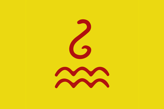

{kind=link}
| 近东 |
| 波斯及中亚 |
| 北亚 |
| 东亚 |
| 东南亚 |
| 印度 |
 | |
|---|---|
| 瓦剌 | |
| 政府等级 | |
| 主流文化 | |
| 首都 | |
| 政体 | |
| 国教 | |
| 兼容信仰 | 未知 |
| 科技组 | |
| 瓦剌 / 准噶尔的理念 |
此信息可能已落后版本，最后更新于1.35 ----
|
| +20% 骑兵战斗能力 −20% 核心化花费 |
| +1 陆军将领冲击
|
|
|


瓦剌（Oirat）是一个草原游牧部落，位于东亚的鞑靼区域。它们遵循  长生天信仰。
长生天信仰。
瓦剌在1444年开局，在东边有  蒙古作为附庸国。在西边，它们邻接
蒙古作为附庸国。在西边，它们邻接  乌兹别克部落。在南边，它们邻接
乌兹别克部落。在南边，它们邻接  东察合台，还有
东察合台，还有  哈密及其宗主国
哈密及其宗主国  大明。一些瓦剌和蒙古的核心被大明掌握，它必然会要求瓦剌成为它们的朝贡国，并且如果拒绝就将开战。
大明。一些瓦剌和蒙古的核心被大明掌握，它必然会要求瓦剌成为它们的朝贡国，并且如果拒绝就将开战。
瓦剌的事件大多与俘获  明朝皇帝的土木堡之变相关。
明朝皇帝的土木堡之变相关。
|
|
这条信息可能已不适合当前版本，最后更新于1.30。 |
战事进展令人惊喜，明朝天子居然亲自带兵。[MNG.Monarch.GetSheHeCap]竟敢在战场上直面我军，实在愚蠢；我们花了点工夫便处理掉了他那可怜又孱弱的士兵，甚至设法抓住了天子本人。
我们拿到了针对南朝朝廷的强力筹码，但必须尽快采取行动以便利用。我们得赶紧占领北京，以便强制执行我们的条款。
触发条件
|
只触发于
（请在这里描述触发条件） |
立即生效
| |
向北京前进！
| |
另参见：蒙古任务/基础游戏
DLC 变革之风开启时，瓦剌使用新的变革之风任务；否则瓦剌使用旧版蒙古任务，其中有一项任务是瓦剌专属的。
变革之风开启时，瓦剌使用新的变革之风任务；否则瓦剌使用旧版蒙古任务，其中有一项任务是瓦剌专属的。
|
|
这条信息可能已不适合当前版本，最后更新于1.36。 |
大汗忽必烈的子嗣们曾一度统治一切中华与蒙古名下的土地。让我们奋起重夺大元的遗产，并粉碎那些试图窃取我们与生俱来权力的羸弱世系！
| 潜在需求 | 接受
|
效果
| |
AI 决议因子：
开局时 瓦剌的君主是绰罗斯家族的也先，在历史上他曾以“太师”的名号长期傀儡着
瓦剌的君主是绰罗斯家族的也先，在历史上他曾以“太师”的名号长期傀儡着 蒙古，并最终在1453年称汗。游戏中的也先太师是一位优秀的君主，更是开局时最强大的将军之一，如果在与
蒙古，并最终在1453年称汗。游戏中的也先太师是一位优秀的君主，更是开局时最强大的将军之一，如果在与 大明的战争中他过早归天，你最好重开。
大明的战争中他过早归天，你最好重开。
 瓦剌开局时的信仰是
瓦剌开局时的信仰是 长生天，非常适合游牧部族。在前期你可以通过不兼容任何信仰来增加骑兵比例并减少部队花费，从而增加国家的战争能力；在中后期最好选择
长生天，非常适合游牧部族。在前期你可以通过不兼容任何信仰来增加骑兵比例并减少部队花费，从而增加国家的战争能力；在中后期最好选择 印度教作为副宗教，它能够为你带来两点
印度教作为副宗教，它能够为你带来两点 异教容忍，配合决议“萨满黄教”与人文理念，能够极大的降低异教省份的叛乱度。
异教容忍，配合决议“萨满黄教”与人文理念，能够极大的降低异教省份的叛乱度。
游牧部落拥有焚掠功能，通过降低新征服土地的发展度来获得君主点数与金币，你应该尽量焚掠每一块土地，这能降低省份的造核花费与过度扩张。不要对同文化的土地手下留情，游牧真正的家乡是剑锋所指的远方。保持一定程度的 腐败度可能是有利的，因为它能减少国家叛乱，腐败度会间接减少你的收入，但游牧国家可以通过掠夺战利品、索要战争赔款、贷款来解决；另一方面，腐败度增加的点数花费可以通过焚掠土地来弥补。当省份的文化与国家的主流文化相同或处于同一文化组时，制造核心所花费的时间会更短，因此一种比较激进的策略是通过不断的转换主流文化来提高征服扩张的速度。在征服东斯拉夫、中华、突厥、日耳曼等等庞大富饶的文化组时这么做会更加划算。
腐败度可能是有利的，因为它能减少国家叛乱，腐败度会间接减少你的收入，但游牧国家可以通过掠夺战利品、索要战争赔款、贷款来解决；另一方面，腐败度增加的点数花费可以通过焚掠土地来弥补。当省份的文化与国家的主流文化相同或处于同一文化组时，制造核心所花费的时间会更短，因此一种比较激进的策略是通过不断的转换主流文化来提高征服扩张的速度。在征服东斯拉夫、中华、突厥、日耳曼等等庞大富饶的文化组时这么做会更加划算。
总而言之，战争与扩张将是是游牧国家永远的主旋律。
依靠1.29增加的独有事件“土木堡之变”， 瓦剌可以在开局时挑战强大的
瓦剌可以在开局时挑战强大的 大明，这一事件只会在
大明，这一事件只会在 大明的君主
大明的君主 军事技能少于2时发生，它使得
军事技能少于2时发生，它使得 大明的君主成为一位将军。
大明的君主成为一位将军。
开局时你有三位外交官，一位去 蒙古改善关系，一位去
蒙古改善关系，一位去 大明制造间谍网（为了增加围城效率），最后一位用于结盟几个盟友，这些盟友的作用并非帮助你与
大明制造间谍网（为了增加围城效率），最后一位用于结盟几个盟友，这些盟友的作用并非帮助你与 大明作战，而是用于防止当你与
大明作战，而是用于防止当你与 大明作战时被宿敌宣战。通过阶层互动获取5对骑兵，最好再雇佣一个增加陆军士气或训练度的顾问，然后就以“获得天命”的理由向
大明作战时被宿敌宣战。通过阶层互动获取5对骑兵，最好再雇佣一个增加陆军士气或训练度的顾问，然后就以“获得天命”的理由向 大明宣战吧。
大明宣战吧。
集合你所有的部队并由君主亲自统帅，等待 大明的军队进入
大明的军队进入 瓦剌与
瓦剌与 蒙古的腹地，将鼠标悬停在敌人部队上可以查看其详细信息，找到由敌人君主或储君率领的部队，伺机与其交战，获胜后就有很大概率发生事件“抓获明朝天子”，这将降低
蒙古的腹地，将鼠标悬停在敌人部队上可以查看其详细信息，找到由敌人君主或储君率领的部队，伺机与其交战，获胜后就有很大概率发生事件“抓获明朝天子”，这将降低 大明20天命和1点稳定，并增加
大明20天命和1点稳定，并增加 瓦剌20%陆军士气与25%围城能力。
瓦剌20%陆军士气与25%围城能力。
现在你对 大明已经有了绝对的军事优势，但先别急着去围攻北京——如果大明在北京附近集结起数倍于你的兵力并发起进攻，依然能给
大明已经有了绝对的军事优势，但先别急着去围攻北京——如果大明在北京附近集结起数倍于你的兵力并发起进攻，依然能给 瓦剌带来非常严重的损失。继续在草原上实行运动战、歼灭战，直到视野范围内找不到敌人大部队为止。之后，留下一些小部队收复失地，主力则前往北京。
瓦剌带来非常严重的损失。继续在草原上实行运动战、歼灭战，直到视野范围内找不到敌人大部队为止。之后，留下一些小部队收复失地，主力则前往北京。
一旦围下北京，你将直接控制所有的华北省份，这会给你带来很多战争分数并减少 大明50天命。为了索要到100分的议和条件，需要注意两点：其一，由于我方省份和堡垒更少，收复我方的无堡垒地区比占领敌方的无堡垒地区带来的战争分数更多；其二，只要围攻敌人堡垒就能增加其投降倾向，即使那座堡垒上只有一支部队。
大明50天命。为了索要到100分的议和条件，需要注意两点：其一，由于我方省份和堡垒更少，收复我方的无堡垒地区比占领敌方的无堡垒地区带来的战争分数更多；其二，只要围攻敌人堡垒就能增加其投降倾向，即使那座堡垒上只有一支部队。
议和时要25分的现金和10分的战争赔款，割地时应注意以下几点： 大明境内有许多不存在国家的核心（
大明境内有许多不存在国家的核心（ 晋
晋 齐
齐 燕等 ），最好一次性将某个国家的核心全部割取，否则
燕等 ），最好一次性将某个国家的核心全部割取，否则 大明爆出的数量众多的分离主义叛军也会进入你的境内；不必急着收复
大明爆出的数量众多的分离主义叛军也会进入你的境内；不必急着收复 瓦剌和
瓦剌和 蒙古的核心，因为分离主义叛军很可能会将这些土地送还；可以割取一块拥有
蒙古的核心，因为分离主义叛军很可能会将这些土地送还；可以割取一块拥有 大顺 核心的土地并释放
大顺 核心的土地并释放 大顺 为附庸，等待叛军将剩余的土地送给你的附庸（注意，同时拥有
大顺 为附庸，等待叛军将剩余的土地送给你的附庸（注意，同时拥有 蒙古与完全体的
蒙古与完全体的 大顺作为附庸时，后者可能将获得相当高的独立倾向）。
大顺作为附庸时，后者可能将获得相当高的独立倾向）。
天命归零又被你索要了巨额赔款的 大明几乎肯定会崩溃解体，而作为获胜者的
大明几乎肯定会崩溃解体，而作为获胜者的 瓦剌，则可以用那数千金币的赔款组织起强大的雇佣军团，开始他壮阔的西征之途。
瓦剌，则可以用那数千金币的赔款组织起强大的雇佣军团，开始他壮阔的西征之途。
通过战争打开一条通向西方的通道，不断前进。保持不落后的军事科技与足够高的 游牧团结，即使不选择军事系理念也能让你在战斗中拥有优势。
游牧团结，即使不选择军事系理念也能让你在战斗中拥有优势。 奥斯曼、
奥斯曼、 莫斯科、
莫斯科、 立陶宛（如果有
立陶宛（如果有 波兰相助的话）都是强大的对手，像对付
波兰相助的话）都是强大的对手，像对付 大明那样对付他们：集合我方主力，在平坦地形上歼灭敌人，反复数次直到消灭敌军主力，最后攻下对方首都逼其和谈。
大明那样对付他们：集合我方主力，在平坦地形上歼灭敌人，反复数次直到消灭敌军主力，最后攻下对方首都逼其和谈。 奥斯曼和
奥斯曼和 莫斯科都很富有，可以索取到上千的战争赔款。
莫斯科都很富有，可以索取到上千的战争赔款。 奥斯曼总是会渴望原本属于
奥斯曼总是会渴望原本属于 克里米亚和
克里米亚和 摩尔达维亚的土地，如果你打算和
摩尔达维亚的土地，如果你打算和 奥斯曼结盟，就不要去触碰那些地方，尽管前者是重建
奥斯曼结盟，就不要去触碰那些地方，尽管前者是重建 蒙古帝国所必须的。
蒙古帝国所必须的。
在议和割地时，最好综合考虑以下因素：1、割取对方有堡垒的省份以便于下一次的征服；2、割取出若干狭长的通道来接触更多的国家；3、割取对方边境线以避免周围国家对战败者的瓜分；4、割取贸易节点来掌控贸易；5、割取有思潮的省份来接纳思潮；
游牧政体十分强大，而获得天命会将你的政体强制转为君主制，所以我们最好通过另一种方式来满足重建 大元所需的条件，那就是消灭天命并成为帝国等级的政府。为了消灭天命，你需要将天子彻底抹除，最好的情况是天命被一个弱小而又与你接壤的国家夺取，从而能让你将其完全吞并，否则你不得不通过战争来打开通道。
大元所需的条件，那就是消灭天命并成为帝国等级的政府。为了消灭天命，你需要将天子彻底抹除，最好的情况是天命被一个弱小而又与你接壤的国家夺取，从而能让你将其完全吞并，否则你不得不通过战争来打开通道。 大明解体后诞生的中华诸国大多有着相同的信仰且属于同一文化组，作为异教徒的你会在征服这些土地时产生很高的侵略扩张，请务必注意这一点。至于成为帝国则比较容易满足，它需要你本国拥有1000发展度和至少75威望，通过不断的战争胜利你应该可以维持一个相当高的威望。
大明解体后诞生的中华诸国大多有着相同的信仰且属于同一文化组，作为异教徒的你会在征服这些土地时产生很高的侵略扩张，请务必注意这一点。至于成为帝国则比较容易满足，它需要你本国拥有1000发展度和至少75威望，通过不断的战争胜利你应该可以维持一个相当高的威望。
除了北京与宣化，重建 大元所需的土地基本上就是阿尔泰文化组的地域，占据着这些土地的国家大部分都很弱小，但如果
大元所需的土地基本上就是阿尔泰文化组的地域，占据着这些土地的国家大部分都很弱小，但如果 东察合台与
东察合台与 帖木儿或
帖木儿或 德里结盟则可能会让事情变得棘手，你或许需要结盟几个他们的敌人来参战。
德里结盟则可能会让事情变得棘手，你或许需要结盟几个他们的敌人来参战。
行政理念可以进一步降低造核花费并提供更多更廉价的雇佣军，人文理念可以大幅降低国家叛乱，外交理念可以减少省份战争分数花费并防止包围网的出现和扩大，都是对 瓦剌帮助很大的理念组。考虑到亚洲北部的贫瘠土地，你或许需要数量理念来帮助维持一支庞大的陆军；进攻理念能提高你部队的战斗力，而且它与人文理念配合的政策能够进一步降低新征服土地的叛乱。那些不喜欢贷款和破产的玩家可能希望自己能有一个正的收入，那么经济理念或许是一个可行的选择，而且经济理念中减少发展成本的效果也能帮助你种出思潮；如果你已经控制了东亚或印度的大部分贸易节点，贸易理念通常能给你带来更多的收入提高。间谍理念也是值得考虑的，一方面它能减少侵略扩张的产生，令一方面也能降低你的
瓦剌帮助很大的理念组。考虑到亚洲北部的贫瘠土地，你或许需要数量理念来帮助维持一支庞大的陆军；进攻理念能提高你部队的战斗力，而且它与人文理念配合的政策能够进一步降低新征服土地的叛乱。那些不喜欢贷款和破产的玩家可能希望自己能有一个正的收入，那么经济理念或许是一个可行的选择，而且经济理念中减少发展成本的效果也能帮助你种出思潮；如果你已经控制了东亚或印度的大部分贸易节点，贸易理念通常能给你带来更多的收入提高。间谍理念也是值得考虑的，一方面它能减少侵略扩张的产生，令一方面也能降低你的 腐败度。
腐败度。

Back in Control 重回掌控 成立大元，并成为唯一控制中国土地的国家。 |

I'll graze my horse here.. And here... 我的马要在这里吃草…还有这里… 作为游牧国家，拥有至少200个生产谷物或牲畜的省份。 |

Pyramid of Skulls 京观 作为游牧国家，将一个至少30发展度的省份进行屠城。 |

Turning the Tide 移风易俗 用1444年的游牧部落开局，接受所有思潮。 |
| 近东 |
| 波斯及中亚 |
| 北亚 |
| 东亚 |
| 东南亚 |
| 印度 |
| 北非 | 创建缩略图出错：文件丢失 得土安 创建缩略图出错：文件丢失 塞拉 |
| 东非 |
| 中非 |
| 东南非 |
| 西非 |
| 西南非 |
| 伊比利亚 |
| 法兰西 |
| 低地 |
| 不列颠 |
| 北欧及波罗的 |
| 中欧 |
| 北德意志 |
| 南德意志 |
| 意大利 |
| 巴尔干及安纳托利亚 | 创建缩略图出错：文件丢失 罗姆 |
| 东欧 |
| 中美洲 |
| 墨西哥 | 创建缩略图出错：文件丢失 普雷佩查 |
| 北美东北 |
| 北美东南 |
| 北美中西部 |
| 部落联盟国家 |
| 前殖民领国家 | |
| 海盗共和国 |
| 南美北部 |
| 安第斯山区 |
| 南美东部 |
| 南美南部 |
| 前殖民领国家 |
| 澳大利亚 |
| 南太平洋 |
| 北太平洋 |
| 前殖民领国家 |